Isola di calore urbana
Isola di calore urbana: un’area superficiale urbanizzata relativamente più calda dell’ambiente (rurale o naturale) circostante
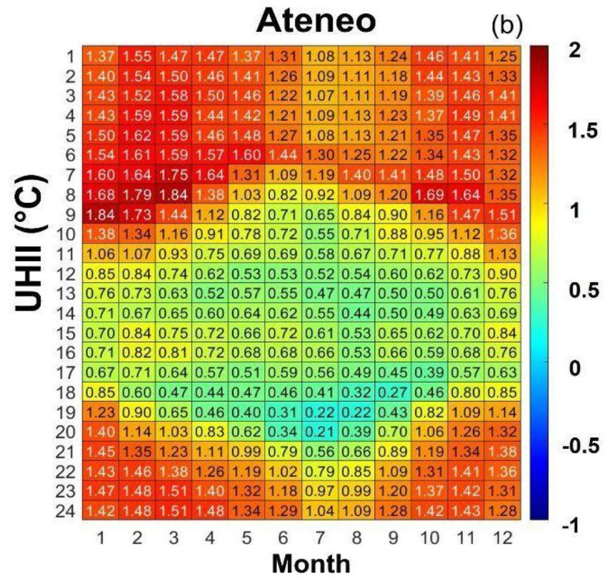 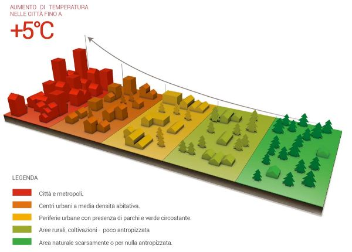Un semplice indice dell’isola di calore è dato dalla differenza di temperatura tra ambiente urbano e ambiente naturale circostante (talvolta definita anche come Intensità: UHII):
Indice o Intensità UHI: IUHI ≡ UHII ≡ ∆ T = Turb – Trur
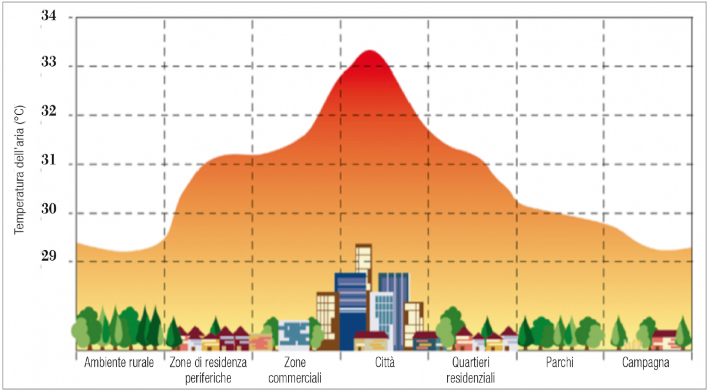L’indice UHI di una grande città (∼ 10 milioni di abitanti) può essere di 1° ÷ 2°C in una media annua, mentre in singole notti calme e serene può raggiungere quasi 12°C.
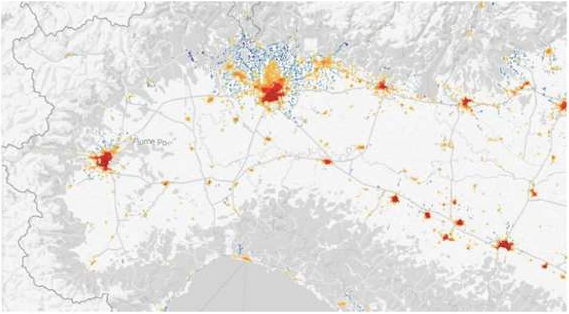 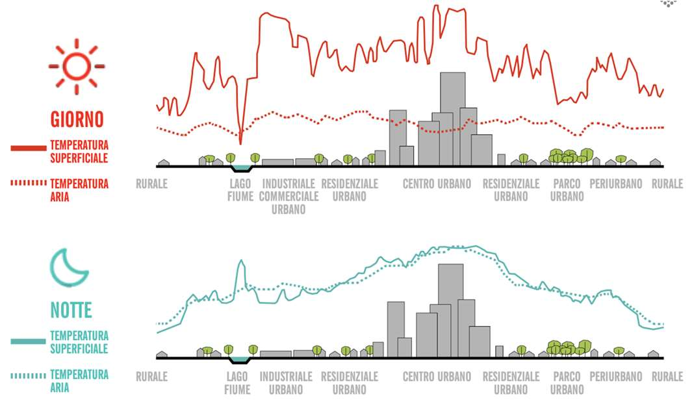 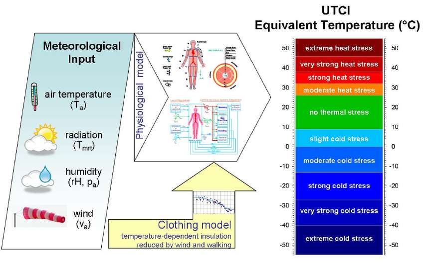Classificazione delle Aree Urbane
Il sistema di classificazione delle Local Climate Zone (LCZ) è uno strumento utile allo studio dell’isola di calore urbana e, più in generale, agli studi micro-climatici.
Il sistema divide l’ambiente urbano in classi sulla base di proprietà che influiscono sulla temperatura dell’aria nei più bassi strati atmosferici: struttura (altezza e spaziatura di edifici ed alberi) e copertura (permeabile o impermeabile) delle superfici.
Le LCZ sono regioni uniformi in termini di copertura, struttura, e materiale delle superfici e si estendono da alcune centinaia di metri fino a diversi chilometri
In funzione di:
Altezza
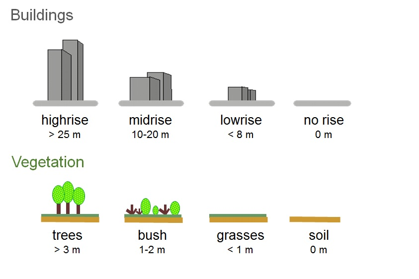Suolo
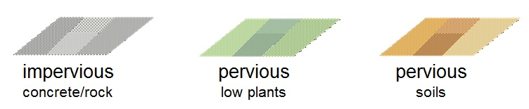Compattezza
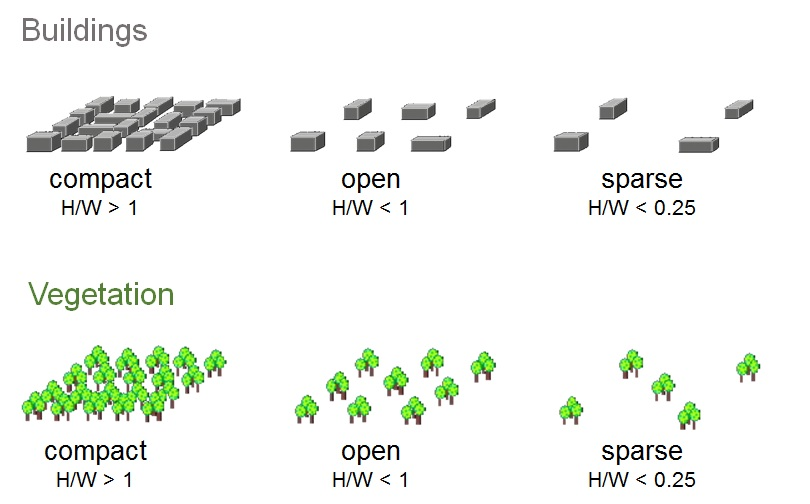Materiale
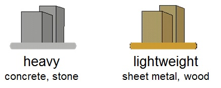Classificazione
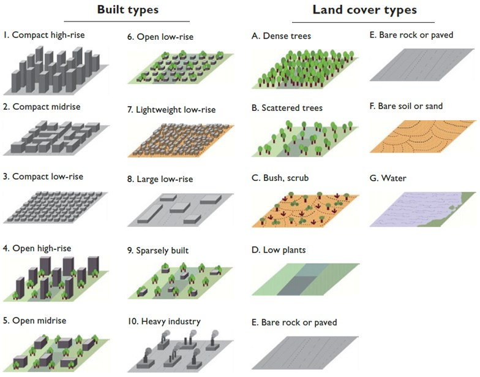Isola di calore a Trento
LCZ 1
LCZ 3
LCZ 5
LCZ 8
LCZ 9